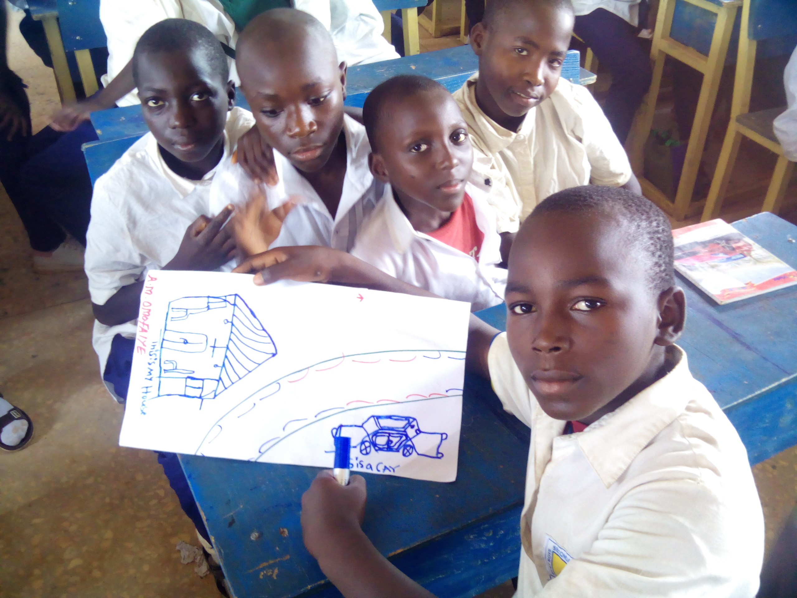
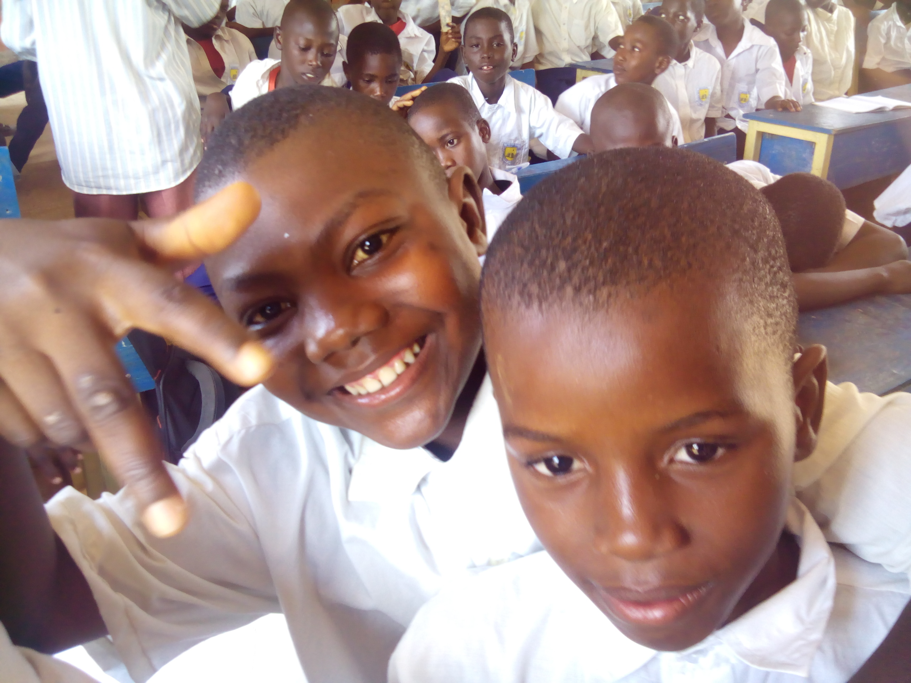
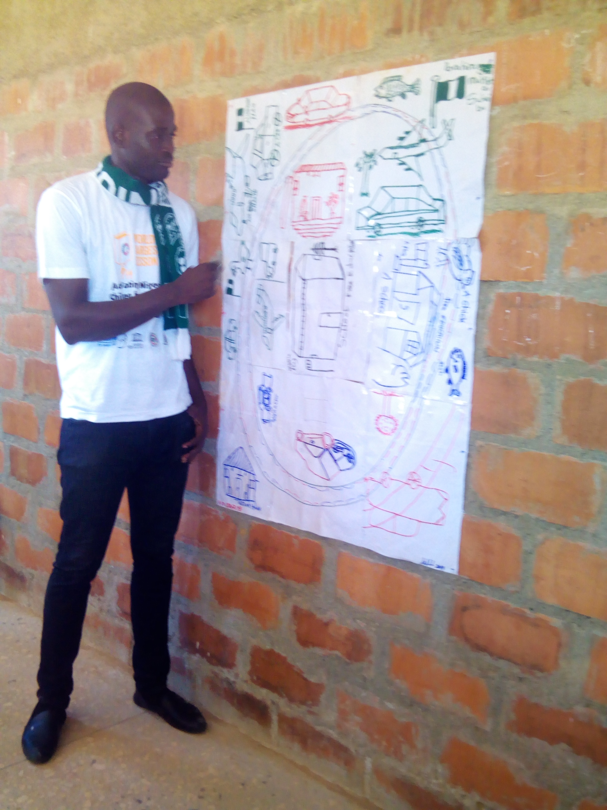

Govt. Boys' Sec. Sch., Barnawa
The Sustainable Development Goals (SDGs) is and array of 17 goals that the world through the United Nations (UN) has agreed to achieve by the year 2030. These goals address a legion of challenges that rear their faces at almost all places where human beings can be found. To achieve these goals, all hands must be on deck. World Largest Lesson (WLL) is working to ensure that these goals are introduced to young persons worldwide.
In october 2019, I volunteered for the school activation programme. This gave me the opportunity to introduce the goals to students of Government Boys' Junior Secondary School, Barnawa, Kaduna, in Kaduna State, Nigeria. We discussed the goals and what we can do as young persons to ensure that Nigeria achieves the goals. For 60 minutes we rubbed minds and shared various contextualized solutionsb that we believe will help in achieving quality education and general well-being of young persons.
After a break out dance session, I distributed pre-cut pieces of plain paper with country outline. Each group drew a Nigeria of their dreams were quality education to be acheived by 2030. These diagrams were cellotaped together to give the country diagram shown above. The activity was essential in distilling the lesson that every one only needs to clean his/her corner and encourages other to do so too. At the end of the lesson, I successfully inducted 81 Junior Secondary One students (between the age range of 12-17 years ) to the SDGs philosophy. They signed the pledge card and promised to play their part towards the acheivement of the goals. We pasted the country diagram on the classwall.